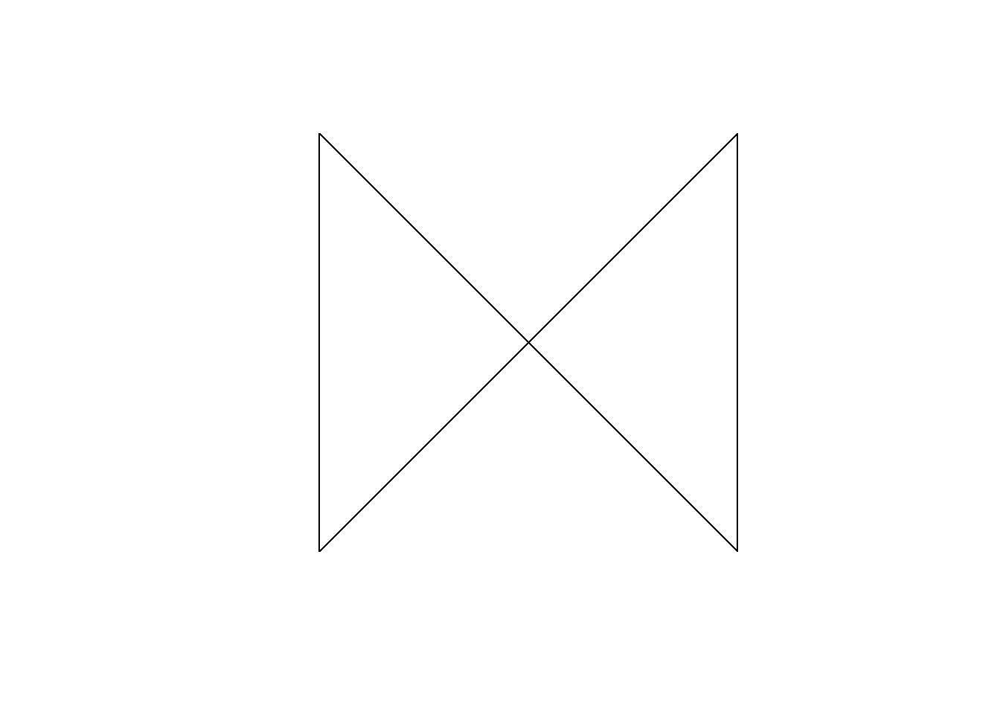
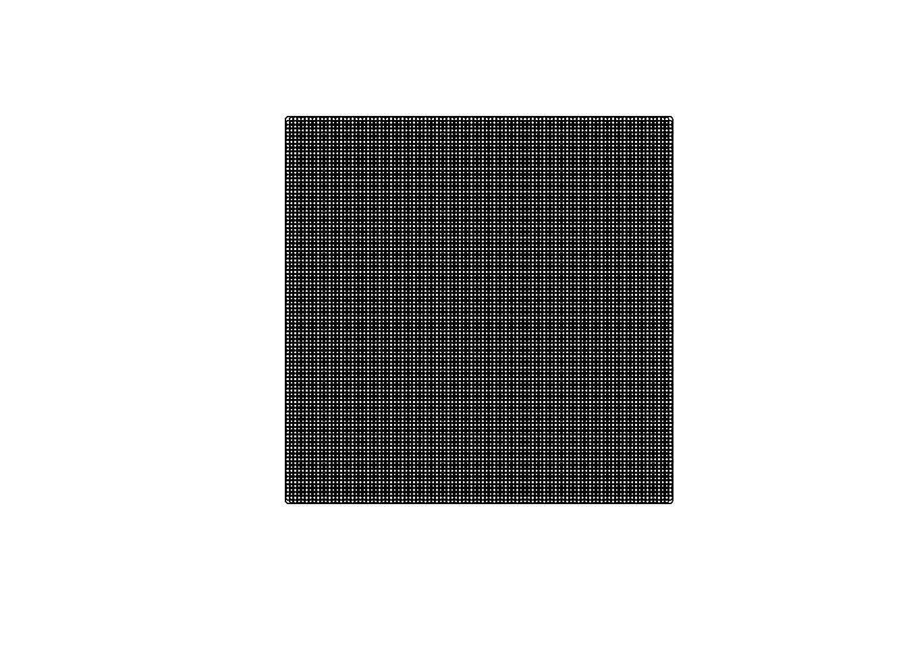
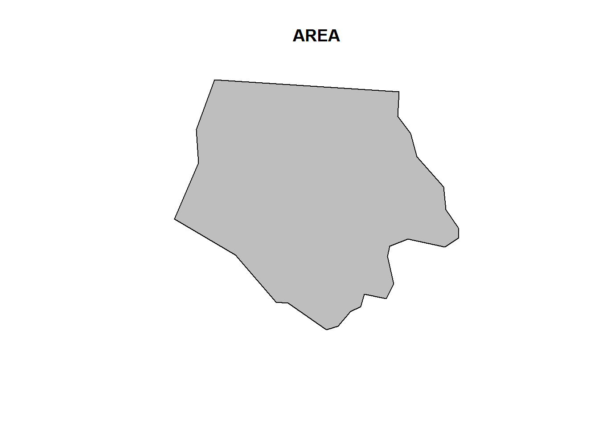
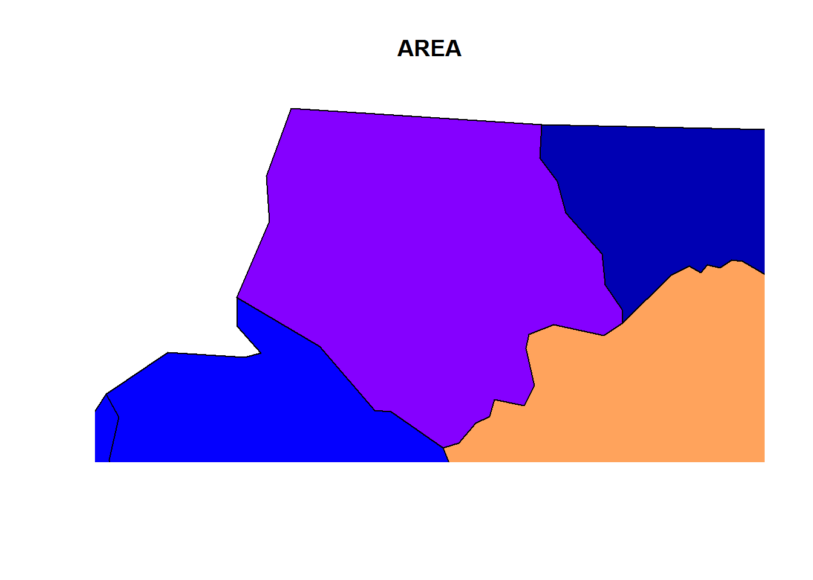
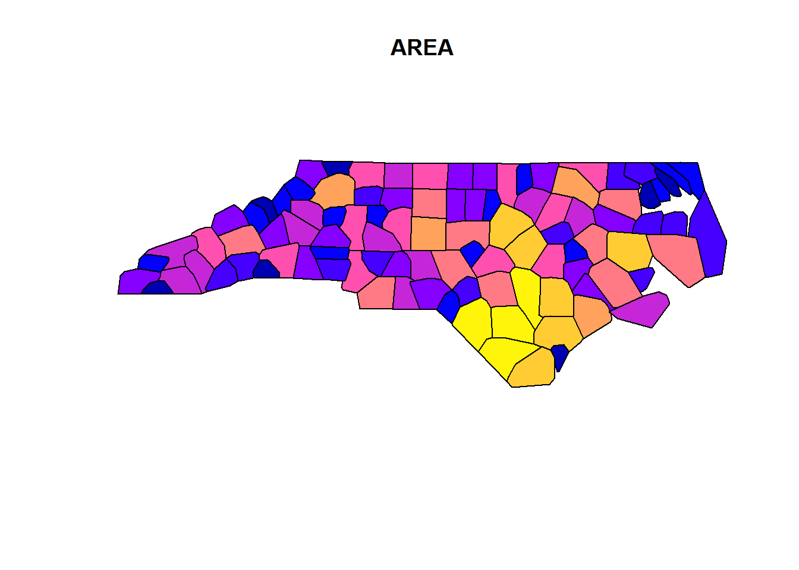
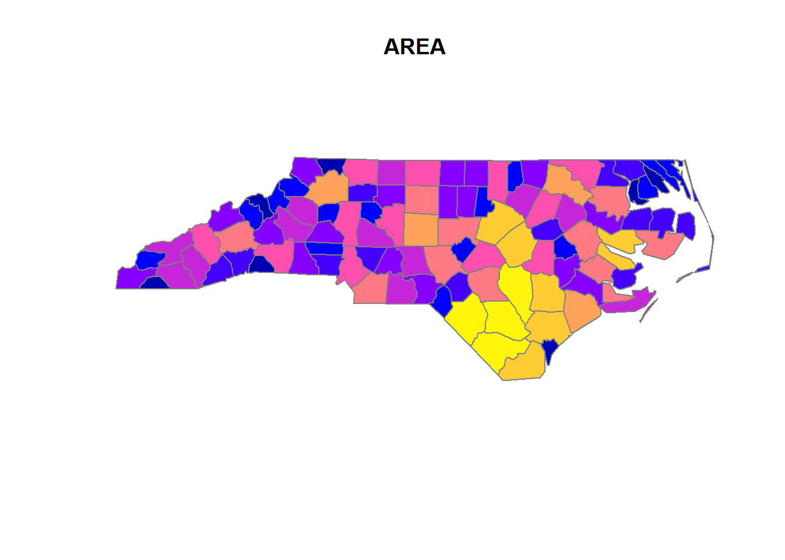

20 Spatial data
20.1 IO
- How to load/read and save/write spatial data?
library(sf)
## Linking to GEOS 3.5.1, GDAL 2.1.3, proj.4 4.9.2, lwgeom 2.3.2 r15302
nc <- st_read(system.file("shape/nc.shp", package="sf"), quiet = TRUE)
# st_write(nc, "nc.shp")
# see st_read_db() and st_write_db() for spatial databases
# look carefully through all of the arguments (especially layers,
# stringsAsFactors, geometry_column, type, quiet)
# in case of specific problems see:
# https://edzer.github.io/sfr/articles/sf2.html
# ____________________________________________________________________________20.2 Objects
- What are the classes of sf-objects?
# the data.frame
class(nc)
#> [1] "sf" "data.frame"
# the geometry list-column
class(st_geometry(nc))
#> [1] "sfc_MULTIPOLYGON" "sfc"
# the individual feature geometries
lapply(st_geometry(dplyr::slice(nc, 1:2)), class)
#> [[1]]
#> [1] "XY" "MULTIPOLYGON" "sfg"
#>
#> [[2]]
#> [1] "XY" "MULTIPOLYGON" "sfg"- Which methods are avaliable for sf-objects?
methods(class = "sf")
#> [1] $<- [ [[<-
#> [4] aggregate anti_join arrange_
#> [7] cbind distinct_ filter_
#> [10] full_join group_by_ inner_join
#> [13] left_join merge mutate_
#> [16] plot print rbind
#> [19] rename_ right_join sample_frac
#> [22] sample_n select_ semi_join
#> [25] slice_ st_agr st_agr<-
#> [28] st_as_sf st_bbox st_boundary
#> [31] st_buffer st_cast st_centroid
#> [34] st_convex_hull st_coordinates st_crs
#> [37] st_crs<- st_difference st_geometry
#> [40] st_geometry<- st_intersection st_is
#> [43] st_line_merge st_make_valid st_polygonize
#> [46] st_precision st_segmentize st_set_precision
#> [49] st_simplify st_sym_difference st_transform
#> [52] st_triangulate st_union st_voronoi
#> [55] st_zm summarise_ transmute_
#> see '?methods' for accessing help and source code
methods(class = 'sfc')
#> [1] [ c format
#> [4] print st_as_binary st_as_text
#> [7] st_bbox st_boundary st_buffer
#> [10] st_cast st_centroid st_convex_hull
#> [13] st_coordinates st_crs st_crs<-
#> [16] st_difference st_geometry st_intersection
#> [19] st_is st_line_merge st_make_valid
#> [22] st_polygonize st_precision st_segmentize
#> [25] st_set_precision st_simplify st_sym_difference
#> [28] st_transform st_triangulate st_union
#> [31] st_voronoi st_zm str
#> [34] summary type_sum
#> see '?methods' for accessing help and source code
methods(class = 'sfg')
#> [1] as.matrix c format
#> [4] head plot print
#> [7] st_as_binary st_as_text st_boundary
#> [10] st_buffer st_centroid st_convex_hull
#> [13] st_coordinates st_difference st_geometry
#> [16] st_intersection st_is st_line_merge
#> [19] st_make_valid st_polygonize st_segmentize
#> [22] st_simplify st_sym_difference st_transform
#> [25] st_triangulate st_union st_voronoi
#> [28] st_zm
#> see '?methods' for accessing help and source code- What sf-geometry types are available, how do you initialize them and what types are the internally?
# internal types:
# - point (atomic)
# - linestring (matrix)
# - everything else (list)
## common geometries
# point
st_point(c(1,2))
# linestring
st_linestring(rbind(c(0.2,3), c(0.2,4), c(1,4.8), c(2,4.8)))
# polygon
st_polygon(list(
rbind(c(0,0), c(1,0), c(3,2), c(2,4), c(1,4), c(0,0)),
rbind(c(1,1), c(1,2), c(2,2), c(1,1))))
# multipoint
st_multipoint(rbind(c(3.2,4), c(3,4.6), c(3.8,4.4), c(3.5,3.8), c(3.4,3.6)))
# multilinestring
st_multilinestring(list(rbind(c(0.2,3), c(0.2,4), c(1,4.8), c(2,4.8)),
rbind(c(0,4.4), c(0.6,5))))
# multipolygon
st_multipolygon(list(
list(rbind(c(0,0), c(1,0), c(3,2), c(2,4), c(1,4), c(0,0)),
rbind(c(1,1), c(1,2), c(2,2), c(1,1))),
list(rbind(c(3,0), c(4,0), c(4,1), c(3,1), c(3,0)),
rbind(c(3.3,0.3), c(3.8,0.3), c(3.8,0.8), c(3.3,0.8), c(3.3,0.3))[5:1,]),
list(rbind(c(3,3), c(4,2), c(4,3), c(3,3)))))
# geometrycollection
st_sfc(st_geometrycollection(list(st_point(1:2))),
st_geometrycollection(list(st_linestring(matrix(1:4,2)))))
# geometry
st_sfc(st_point(1:2), st_linestring(matrix(1:4,2))) # like the latter, but as a "superclass"
## rare geometries
# circularstring
# compoundcurve
# curvepolygon
# multicurve
# multisurface
# curve
# surface
# polyhedral surface
# tin
# triangle- What are the dimensions of those objects?
x = st_sfc(
st_point(0:1),
st_linestring(rbind(c(0,0),c(1,1))),
st_polygon(list(rbind(c(0,0),c(1,0),c(0,1),c(0,0)))),
st_multipoint(),
st_linestring(),
st_geometrycollection())
st_dimension(x, NA_if_empty = FALSE)
#> [1] 0 1 2 0 1 0- How to initialize these objects from well known text?
st_as_sfc("POINT(0 1)")
#> Geometry set for 1 feature
#> geometry type: POINT
#> dimension: XY
#> bbox: xmin: 0 ymin: 1 xmax: 0 ymax: 1
#> epsg (SRID): NA
#> proj4string: NA
#> POINT(0 1)- How to initialize an sf-object and bring it into coordinate reference systems (crs)?
# attributes of sfc obejects to store a crs: epsg, proj4string
# theses must be the same for all elements of an sfc-object, but can also be NA.
# -proj4string is a generic, string-based description of crs
# - epsg integer values refer to particular well known crs, that might also
# improve over time
st_sf(points = st_sfc(st_point(c(0, 0)),
st_point(c(0, 1)),
crs = 4326))
#> Simple feature collection with 2 features and 0 fields
#> geometry type: POINT
#> dimension: XY
#> bbox: xmin: 0 ymin: 0 xmax: 0 ymax: 1
#> epsg (SRID): 4326
#> proj4string: +proj=longlat +datum=WGS84 +no_defs
#> points
#> 1 POINT(0 0)
#> 2 POINT(0 1)
# also use:
# use st_crs() and st_transform()- How to coerce data.frames to sf?
# use st_as_sf- How to create and identify empty geometries?
st_geometrycollection()
#> GEOMETRYCOLLECTION()
length(st_geometrycollection())
#> [1] 0- How to identify unconnected parts of geometries?
which(sapply(st_geometry(nc), length) > 1)
#> [1] 4 56 57 87 91 95- How to switch between well-known text and well-known binary encoding?
x <- st_linestring(matrix(10:1,5))
st_as_text(x)
#> [1] "LINESTRING(10 5, 9 4, 8 3, 7 2, 6 1)"
st_as_binary(x)
#> [1] 01 02 00 00 00 05 00 00 00 00 00 00 00 00 00 24 40 00 00 00 00 00 00
#> [24] 14 40 00 00 00 00 00 00 22 40 00 00 00 00 00 00 10 40 00 00 00 00 00
#> [47] 00 20 40 00 00 00 00 00 00 08 40 00 00 00 00 00 00 1c 40 00 00 00 00
#> [70] 00 00 00 40 00 00 00 00 00 00 18 40 00 00 00 00 00 00 f0 3f- How to control geometries for simplicity and validity?
st_is_valid(st_as_sfc("POLYGON((0 0, 0 10, 10 0, 10 10, 0 0))"))
#> Warning in eval(substitute(expr), envir, enclos): Self-intersection at or
#> near point 5 5
#> [1] FALSE
st_is_simple(st_as_sfc("POLYGON((0 0, 0 10, 10 0, 10 10, 0 0))"))
#> [1] TRUE
plot(st_as_sfc("POLYGON((0 0, 0 10, 10 0, 10 10, 0 0))"))
- How to create a grid manually?
library(dplyr)
lat <- seq(from = 1, to = 50, length.out = 100)
long <- seq(from = 1, to = 50, length.out = 100)
grid <- tidyr::expand(tibble(lat = lat, long = long), lat, long)
grid <- grid %>%
mutate(points = purrr::map2(lat, long,
~st_geometrycollection(list(st_point(c(.x,.y))))))
grid <- grid %>% mutate(points = st_sfc(points))
grid <- st_sf(grid, stringsAsFactors = FALSE,
sf_column_name = "points")
plot(grid %>% select(points))
How to set aggregations?
# while initializing
nc <- st_read(system.file("shape/nc.shp", package="sf"),
agr = c(AREA = "aggregate", PERIMETER = "aggregate", CNTY_ = "identity",
CNTY_ID = "identity", NAME = "identity", FIPS = "identity", FIPSNO = "identity",
CRESS_ID = "identity", BIR74 = "aggregate", SID74 = "aggregate", NWBIR74 = "aggregate",
BIR79 = "aggregate", SID79 = "aggregate", NWBIR79 = "aggregate"))
#> Reading layer `nc' from data source `D:\R\Projects\Tidyverse-Cookbook\packrat\lib\x86_64-w64-mingw32\3.3.3\sf\shape\nc.shp' using driver `ESRI Shapefile'
#> converted into: POLYGON
#> Simple feature collection with 100 features and 14 fields
#> Attribute-geometry relationship: 0 constant, 8 aggregate, 6 identity
#> geometry type: MULTIPOLYGON
#> dimension: XY
#> bbox: xmin: -84.32385 ymin: 33.88199 xmax: -75.45698 ymax: 36.58965
#> epsg (SRID): 4267
#> proj4string: +proj=longlat +datum=NAD27 +no_defs20.3 Arithmetics
- How to calculate with simple features?
st_polygon(list(rbind(c(0,0),c(1,0),c(1,1),c(0,1),c(0,0)))) - 0.5
#> POLYGON((-0.5 -0.5, 0.5 -0.5, 0.5 0.5, -0.5 0.5, -0.5 -0.5))
st_point(c(0,0)) + 1
#> POINT(1 1)- How to calculate distances?
x = st_transform(nc, 32119)
st_distance(x[c(1,4,22),], x[c(1, 33,55,56),], dist_fun = geosphere::distGeo)
#> Units: m
#> [,1] [,2] [,3] [,4]
#> [1,] 0.00 312184.9 128341.85 475623.3
#> [2,] 440561.15 114939.7 590434.80 0.0
#> [3,] 18944.03 352719.1 78756.89 517527.8
line = st_sfc(st_linestring(rbind(c(30,30), c(40,40))), crs = 4326)
st_length(line)
#> 1434649 m20.4 Plots
- How does the plot method and its
addargument work?
plot(nc[1,1], col = 'grey')
plot(nc[1,1], col = 'grey')
plot(nc[1], add = TRUE)
plot(nc[1])
plot(nc[1,1], col = 'grey', add = TRUE)- Some differenct plot options
plot(nc[1])plot(st_convex_hull(nc[1]))
plot(nc[1], border = grey(.5))